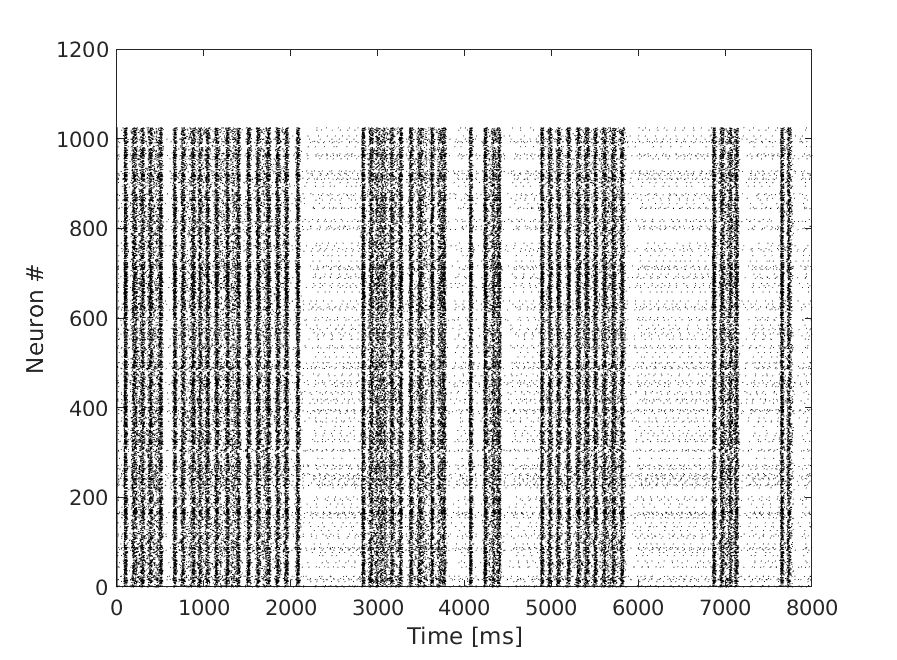

This is a reference implementation of the following model:
Pena, R.F.O., Zaks, M., Roque, A.C. (2018). Spontaneous activity dynamics in random networks of spiking neurons with synaptic noise. Journal of Computational Neuroscience, 45:1-28. doi 10.1007/s10827-018-0688-6
The very same code can has functions to reproduce results from the following papers
Tomov, P. , Pena, R.F. , Roque, A.C., Zaks, M.A. (2016). Mechanisms of self-sustained oscillatory states in hierarchical modular networks with mixtures of electrophysiological cell types. Frontiers in Computational Neuroscience, 10:23. doi 10.3389/fncom.2016.00023
Tomov, P. ,Pena, R.F. , Zaks, M.A. , Roque,A.C.(2014). Sustained oscillations, irregular firing, and chaotic dynamics in hierarchical modular networks with mixtures of electrophysiological cell types. Frontiers in Computational Neuroscience, 8:103. doi 10.3389/fncom.2014.00103
Platform: Linux
c++ (GCC): 8.3.0
The network model is implemented using object-oriented programming in c++ . For data processing and visualization we used standard functions available in Matlab.
This folder contains seven Python codes:
The main script used to simulate the network is from the terminal is:
An example of how to run the scrip:
bash run.sh
We have included a Matlab code, plot_raster.m, in order to create a figure of the raster plot. The default parameters should create a similar raster plot like the one in Fig.8 from the paper. It is expected that the figure won't be the same given its stochastic nature:
Before running the script, the code must be compiled:
c++ *cpp -o code.out
After running the simulations, the code generates three files
raster.dat = matrix containing raster plot information. First column contains neuron index, then every line contains spike times.
listsynM0In2Ex23Sim121NumSim_1.dat = Connectivity matrix
ex12inM0In2Ex23Sim121NumSim_1.dat = Neuron type